Design Canva DAHT5dd2JhQ (32 págs.) · template de referência canva.link/khmyhvlt5ei73lz · exportadas PNG 1920×1080 pro · entregues no Drive "Thumbs AI Anima" · 17/09/2026
| Critério do template | Resultado (32/32) |
|---|---|
| Logo Anima Saúde (top 108, left 881, recolor branco/azul) | ✅ idêntico em todas |
| Borda azul #00afef 15 px | ✅ idêntico |
| Casal de apresentadores alinhado à base inferior (crop top −5,1 / h 1107,7) | ✅ faixa da base idêntica em todas (diff 0,00 vs pág. 1) |
| Convidado: topo do cabelo em y=200 | ✅ elemento top 200 em todas (recorte aparado no alpha) |
| Convidado: altura da cabeça 375 px (homem) / 355 px (mulher); dupla 340/325 | ✅ escala calculada pelo pescoço do recorte (medido 352–383 nos homens, 355 nas mulheres) |
| Convidado: centro do rosto x≈1625, left ≥ 1180 | ✅ left entre 1180 e 1293 |
| Título (box 572–1483, y 304–472) sem sobrepor a foto | ✅ borda do cabelo na faixa do título ≥ 1394; texto mais largo (#11) termina em 1405 vs cabelo em 1412 |
| "com Nome" (y 585–642) sem sobrepor a foto | ✅ folga mínima 37 px (#47) |
| Selo "Episódio #N" livre | ✅ 0% de intrusão em todas |
| Textos em 1º plano (layer front) | ✅ reaplicado em todas as páginas após a troca |
| P&B, recorte limpo, mãos corretas | ✅ Grok + rembg; revisão visual das 32 |
| Identidade = convidado real do episódio (thumb do YouTube) | ✅ conferido 1 a 1 antes de montar (#54: foto antiga era o casal → substituída pelos reais) |
Observações: #8 (Bruno Lamoglia) tem o rosto naturalmente largo — a altura da cabeça está na regra (pescoço 382 px). #11 (Clarissa) é o título mais largo do lote; folga de 7 px para o cabelo — sem sobreposição.
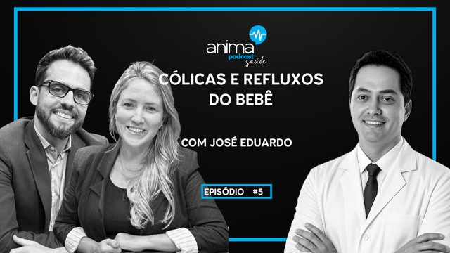
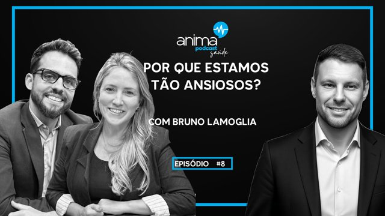
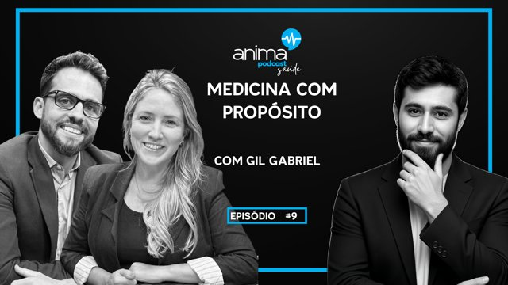
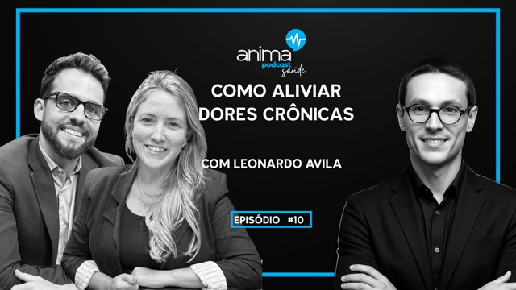
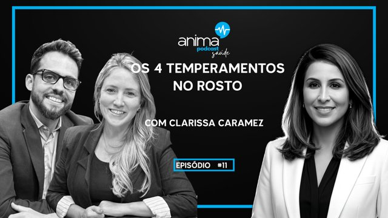
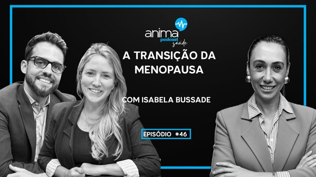
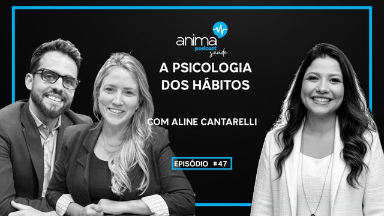
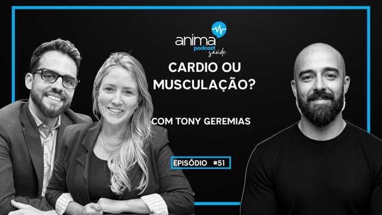
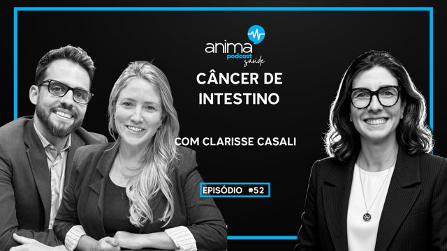
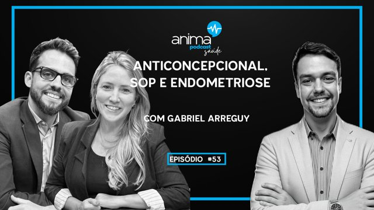
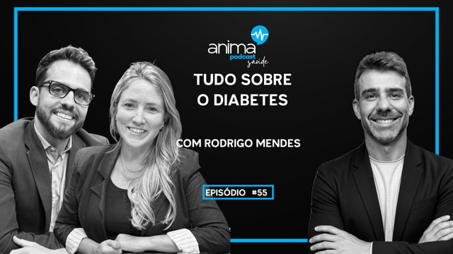
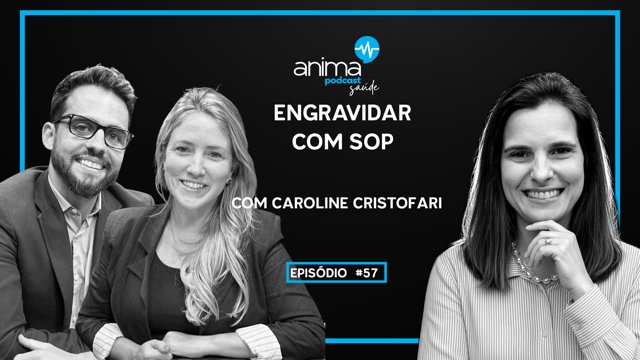
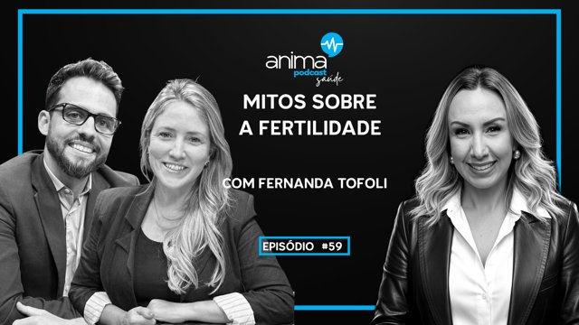
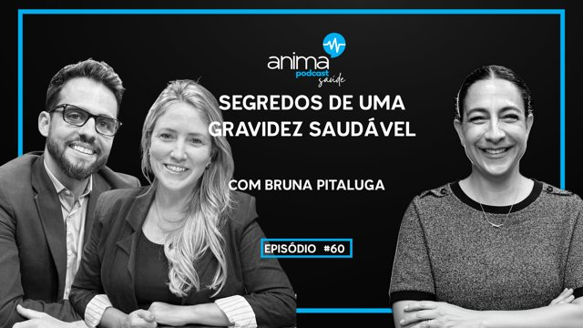
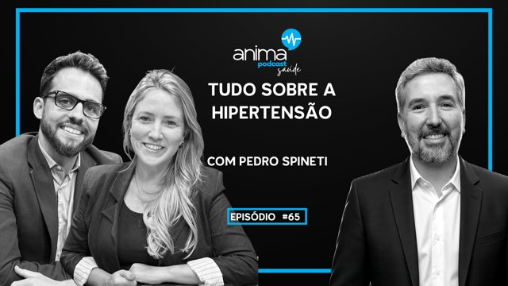
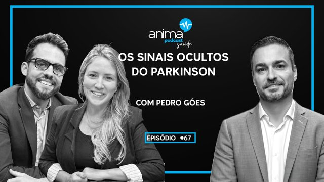
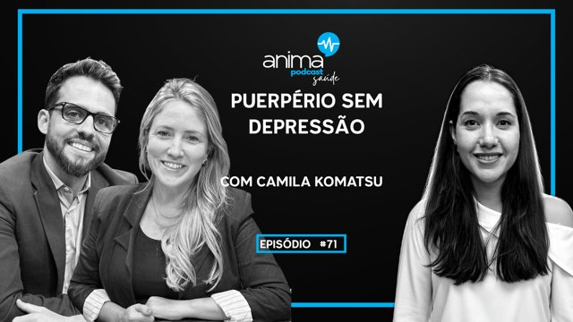